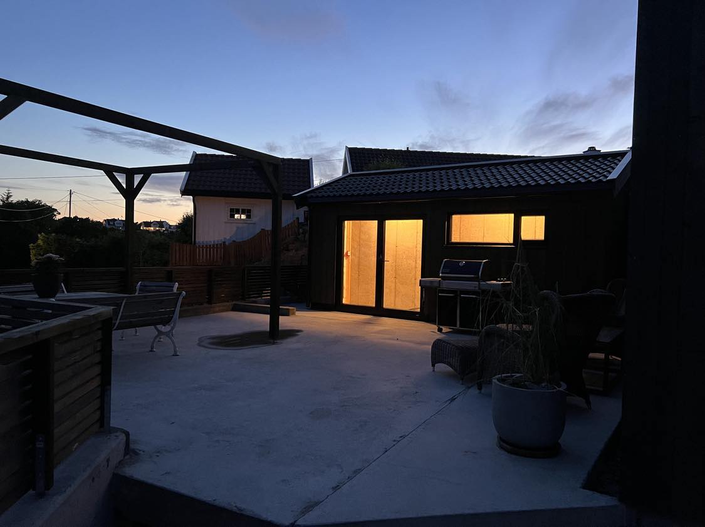
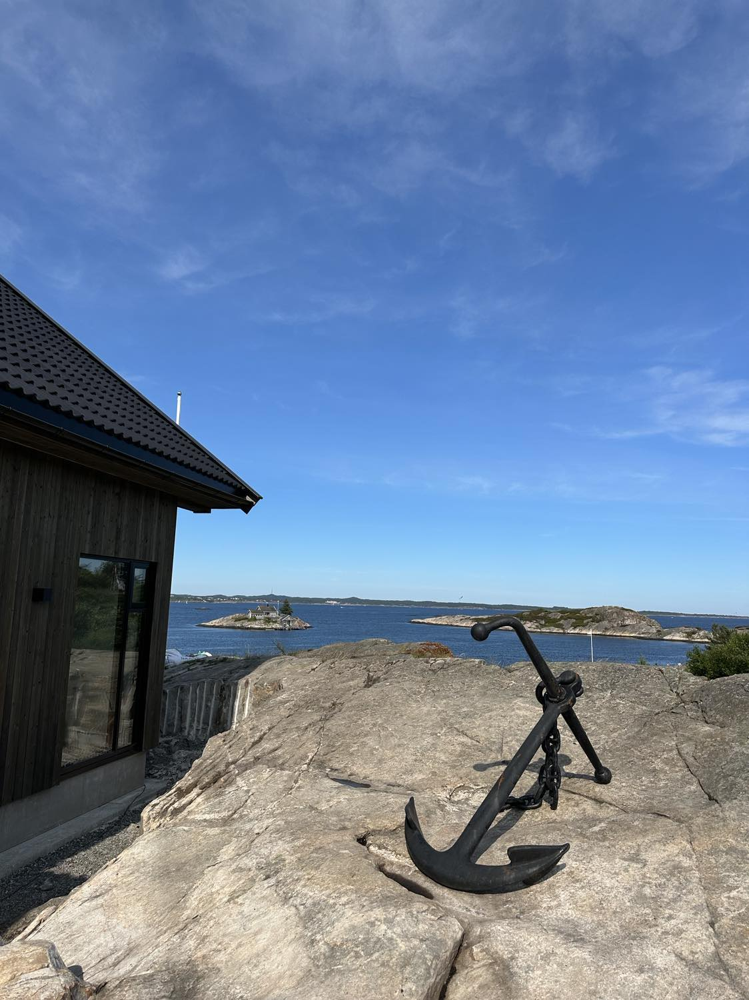

Mehr über das Ferienhaus
Das Ferienhaus befindet sich am Nodeberg in Skålvik auf der idyllischen Insel Flekkerøya etwas außerhalb von Kristiansand. Das moderne Gebäude, das 2023 erbaut wurde, befindet sich auf einem Hügel mit Panoramablick auf das Meer und Bootsverbindungen zum Stadtzentrum von Kristiansand. Es gibt eine Straße, die zur Hütte führt, 2 Parkplätze und einen Bootsanlegeplatz. Es ist nicht weit von Einkaufsmöglichkeiten und 20 Autominuten vom Stadtzentrum von Kristiansand entfernt.
Erdgeschoss
- Großes offenes Wohnzimmer mit Smart-TV, Gaskamin, großer offener Küche und Zugang zur Terrasse mit atemberaubender Aussicht
- Ein großes Schlafzimmer mit Doppelbett
- Badezimmer mit WC & Dusche
Erdgeschoss - Abstellräume:
- Abstellraum für Wäsche und Kühlschrank
- Technischer Stand
- Weinraum (nicht für Gäste verfügbar)

1.Etage
- Wohnzimmer mit Gaskamin und Zugang zur Terrasse mit atemberaubender Aussicht
- Zwei große Schlafzimmer mit Doppelbetten
- Großes Badezimmer mit WC und Dusche
- Großer, luftiger Gästebereich / Schlafzimmer mit eigenem Bad / Dusche / Badewanne
- Begehbarer Schrank geschlossen (nicht für Gäste verfügbar)

AUSSENBEREICHE
Der Abstellraum im Freien in Richtung Parkplatz dient zur Lagerung von Gaskamin zum Grillen im Freien und Stühlen / Kissen im Freien. Der Außenschuppen in Richtung Meer wird für Angelgeräte und Gartengeräte genutzt. Die Angelausrüstung kann auf Wunsch verwendet werden. Das Grundstück grenzt an einen schönen öffentlichen Badeort. Dieser kann gemeinsam mit anderen Bewohnern und Hüttengästen genutzt werden. Es gibt tolle Bademöglichkeiten mit tiefem Wasser direkt an den Felsen. WICHTIG! Denken Sie daran, jede Nacht nach Gebrauch Matten, Kissen und Matratzen ins Haus zu räumen, um sie vor Regen und Wind zu schützen.
BADEMÖGLICHKEITEN
Wie oben erwähnt, gibt es einen tollen Badeplatz 20 Meter von der Hütte entfernt. Mit seinen schönen Felsen ist der Badebereich der perfekte Ort, um heiße Sommertage zu genießen und ein erfrischendes Bad zu nehmen.


BOOTS- UND ANGELMÖGLICHKEITEN
Versuchen Sie Ihr Glück beim Angeln! In der Umgebung von Flekkerøya gibt es viele Fische, vor allem ist es einfach, Makrelen, Kabeljau, Seelachs und Leier zu fangen. Es kann sowohl vom Land als auch vom Boot aus gefischt werden. Komplette Angelausrüstung finden Sie im Ferienhaus. Das Ferienhaus verfügt über einen eigenen Liegeplatz, der genutzt werden kann. Bitte kontaktieren Sie uns, wenn dies gewünscht ist. Ein Boot ist nicht verfügbar. Bei Anmietung eines externen Bootes: Dieses muss weniger als 20 Fuß lang sein, damit es in den Liegeplatz passt. Die Zeichnung unten zeigt die verschiedenen Liegeplätze am Pier und das Ferienhaus verfügt über den Bootsplatz Nr. 1. Andere Boote und Kajaks dürfen nicht benutzt werden, da diese Eigentum anderer Hütten sind.


AUSSENBEREICHE
Rund um das Ferienhaus gibt es schöne Außenbereiche mit einem einzigartigen Blick auf das Meer. Es gibt Zugang zu guten, sonnigen Sitzgelegenheiten mit Pergola und Gaskamin zum Grillen im Freien, Terrassen und Rasen. Es gibt auch zwei Buden (ausser), die mit dem Ferienhaus verbunden sind.
 PARKPLÄTZE
Das Ferienhaus verfügt über 2 Parkplätze auf einem privaten Parkplatz in der Nähe. Parken Sie so nah wie möglich an der Treppe zu Ihrem Ferienhaus.